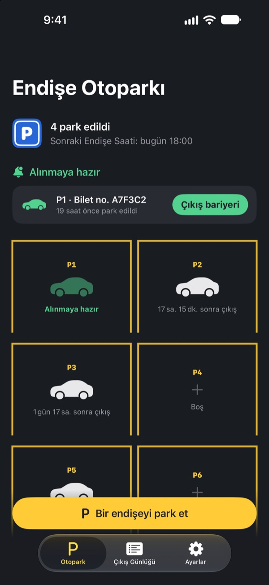
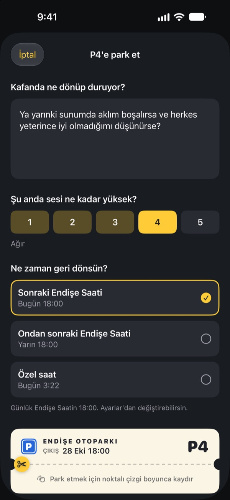
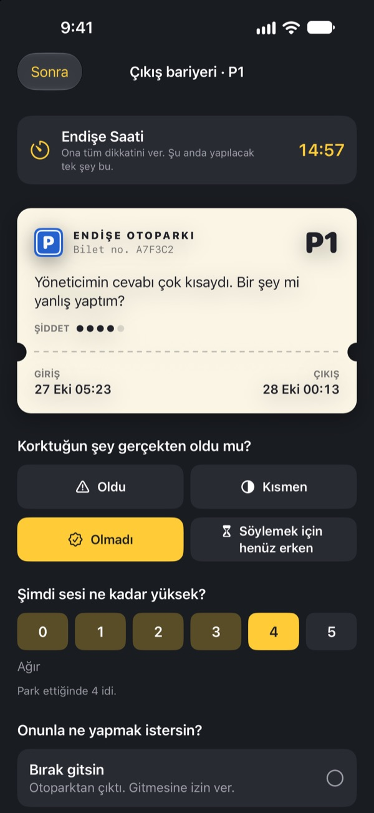
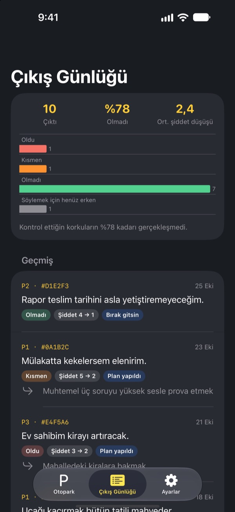

Endişeni park et.
Sonra gelip al.
Uyumadan önce kafanda dönüp duranı bir otopark fişine yaz ve bırak. Endişe Saatinde sana geri veririz. O zamana kadar onu taşımak zorunda değilsin.
Tüm özellikler ücretsiz. Reklam yok, hesap yok.

Bir endişeyi park et
Örneği bırak ya da şu an aklındakini yaz. Park edilince bulanıklaşır, Endişe Saatinde yeniden çıkarırsın.
Işık kapandı, kafa açıldı mı?
Başını yastığa koyar koymaz başlar: gün içinde söylediğin bir söz, yarınki toplantı, hâlâ cevap gelmeyen mesaj. Düşünmemeye çalıştıkça sesi daha da yükselir. Endişe Otoparkı endişeyi itip kakmanı istemez. Onu yazar, ona bir yer verir ve ilgilenmek için ayrı bir zaman ayırırsın.
Yazınca kafandan iner
Kafanda nasıl duyuluyorsa öyle yaz ve şu an ne kadar yüksek sesle çınladığını 1’den 5’e kadar seç. Fişi kopar, endişe otoparkta bulanık hâlde kalır.
Yeniden aklına gelirse ona söyle: zaten bir yerin var. Senin de sıran gelecek ama şimdi değil.

Endişe Saatinde sadece 15 dakika
Her gün Endişe Saatinde bir hatırlatma gelir. Çıkış bariyerinde endişeyi yeniden okur, gerçekten olup olmadığına ve şimdi ne kadar yüksek sesle çınladığına bakarsın.
Sonra onu bırakır, küçük bir sonraki adıma çevirir ya da bir sonraki Endişe Saatine kadar yeniden park edersin.

Endişelerinin ne sıklıkla çıktığını gör
Çıkış yapan endişeler arttıkça Çıkış Günlüğü kaçının gerçekten yaşandığını ve şiddetinin ne kadar düştüğünü daha net gösterir.
Endişe geleceği çoğu zaman olduğundan daha kötü tahmin eder. Kaydettikçe bir sonrakine daha az inanırsın.

Üç adımda başla
- 1
Endişe Saatini seç
İlk açılışta her gün endişelerinle ne zaman ilgileneceğini seçersin. Sonra Ayarlar’dan değiştirebilirsin.
- 2
Gerçek bir endişeyi park et
Aklını kurcalayan bir şeyi hemen park et ve şiddetinin önce ve sonra nasıl değiştiğini fark et.
- 3
Teslim alma hatırlatıcılarına izin ver
Endişe Saatinde yalnızca park yeri numarasını gösteren bir hatırlatma gelir.
Neden işe yarar
- Yalnızca belirli bir saatte endişelen
- Endişelerini gün içinde kısa bir zamana taşıyanlar daha az endişelendi; daha az kaygı ve uyku sorunu bildirdi. (Borkovec ve ark., 1983; McGowan ve Behar, 2013)
- Bırakmak için yaz
- Somut bir plan, yarım kalan işlerin düşüncelere sızmasını engelledi; yatmadan önce beş dakika yazanlar da daha çabuk uykuya daldı. (Masicampo ve Baumeister, 2011; Scullin ve ark., 2018)
- Gerçekte ne olduğunu kontrol et
- Kronik endişe yaşayan kişiler endişelerini kaydettiğinde, bunların %91’i gerçekleşmedi. (LaFreniere ve Newman, 2020)
Endişe Otoparkı, bilişsel davranışçı terapinin (BDT) onlarca yıldır araştırılan tekniklerinden biri olan endişe erteleme üzerine kuruludur.
Her şey ücretsiz
Ücretsiz
- Sınırsız park yeri
- Her gün Endişe Saati hatırlatması, istediğin çıkış saati
- Çıkış bariyeri ve Çıkış Günlüğü
- Çıkış içgörüleri: kaçı gerçekleşti, şiddet ne kadar düştü
Bahşiş, istersen
- Uygulama işine yaradıysa geliştiriciye küçük bir bahşiş bırakabilirsin
- Küçük, orta ya da büyük, nasıl istersen
Bahşiş hiçbir özelliği açmaz. Bahşiş vermeden de her şey aynı çalışır.
Reklam, hesap, sunucu ve analiz aracı yok. Yazdığın her şey iPhone’unda kalır.
Sık sorulan sorular
Endişe Saatimi nasıl değiştiririm?
Ayarlar sekmesindeki Endişe Saati bölümünden. Yeni saat, bundan sonra park ettiğin endişeler için geçerli olur. Zaten park edilmiş olanlar ilk çıkış saatlerini korur.
Teslim alma hatırlatmaları gelmiyor.
Ayarlar sekmesinde Bildirimler’e bak. Kapalıysa iOS Ayarları'nı aç’a dokunup bildirimleri aç. Odak ya da Rahatsız Etme açıkken hatırlatmalar sessiz gelebilir. Hatırlatma gelmese de zamanı gelen endişeler otoparkta çıkışa hazır olarak görünür.
Bildirimde endişem görünüyor mu?
Hayır. Bildirimlerde yalnızca park yeri numarası görünür, örneğin “P3 çıkışa hazır”. Endişenin kendisi ancak uygulamayı açıp çıkış bariyerine girdiğinde görünür.
Endişe Saatinden önce bakabilir miyim?
Otoparkta arabasına dokun ve Şimdi çıkış bariyerine gönder’i seç. Yine de erteleme en iyi beklediğinde işe yarar. Çoğu endişe Endişe Saati geldiğinde daha küçük görünür.
Kayıtlarımı yeni bir iPhone’a taşıyabilir miyim?
Her şey yalnızca iPhone’unda saklanır; hesap ya da eşzamanlama yoktur. Yeni iPhone’u iCloud ya da bilgisayar yedeğinden geri yüklersen veya Hızlı Başlangıç’ı kullanırsan, kayıtlar diğer uygulamalarınla birlikte taşınır.
Kayıtlarımı nasıl silerim?
Çıkış Günlüğü sekmesinde bir kaydı sola kaydırarak silebilirsin. Uygulamayı silersen her şey silinir.
Bu bir tedavi mi?
Endişe Otoparkı, BDT’deki endişe erteleme tekniğine dayanan bir kendi kendine yardım aracıdır. Tıbbi bir cihaz değildir ve uzman teşhisinin ya da tedavisinin yerini tutmaz.
Gerçekten çok zorlanıyorsam ne yapmalıyım?
Endişeler günlerini ele geçiriyorsa ya da kendine zarar vermeyi düşünüyorsan, lütfen bunu tek başına taşıma. Türkiye’de acil durumda 112’yi ara; ALO 183 Sosyal Destek Hattı’ndan da destek alabilirsin.
Soruların ya da fikirlerin mi var? leeo@kakao.com adresine yaz.